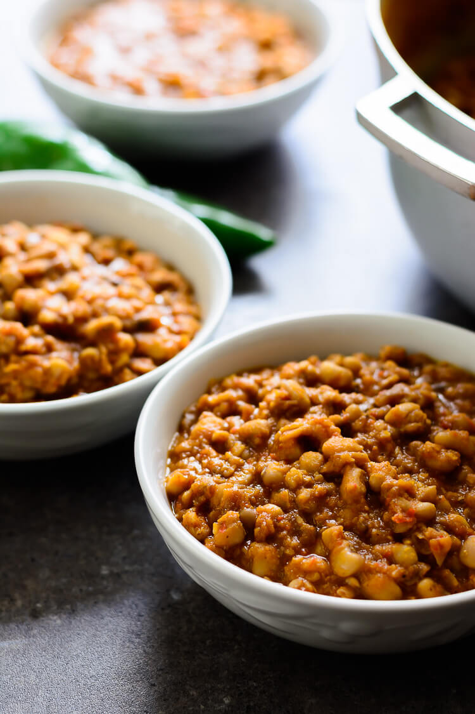

Beans

Description
Nigerian beans porridge, also known as stewed beans,
is a dietary staple in many households in the country.
It is called “ewa riro” in Yoruba or sometimes just referred
to as “ewa”, which means beans. It is similar to the Ghanaian
“red red” and is perfect for vegetarians.
Ingredients
- Beans
- Red bell pepper
- Cray fish
- Onions
- Tomatos
- Palm Oil
Steps
- Place saucepan on hob and add 400mls of water and bring to boil.
- While the water is coming to boil, wash 300grams of Nigerian honey
beans under cold water and toss into the hot water.
- Add half of the chopped onion and cover the saucepan..
- Heat a little vegetable oil and sesame oil, then fry the rice by spreading it in a solid, even layer in the hot pan.
- Cook for 40mins.